A women’s cycling camp on a stretch of the Spanish Mediterranean the international cycling world hasn’t found yet. Small group. Real climbs. A four-star base between the pines and the sea. Cycling, taken seriously — without the noise.
Ten places. The first four go to the interest list at €999 — €100 under the public price. A €150 deposit reserves yours.
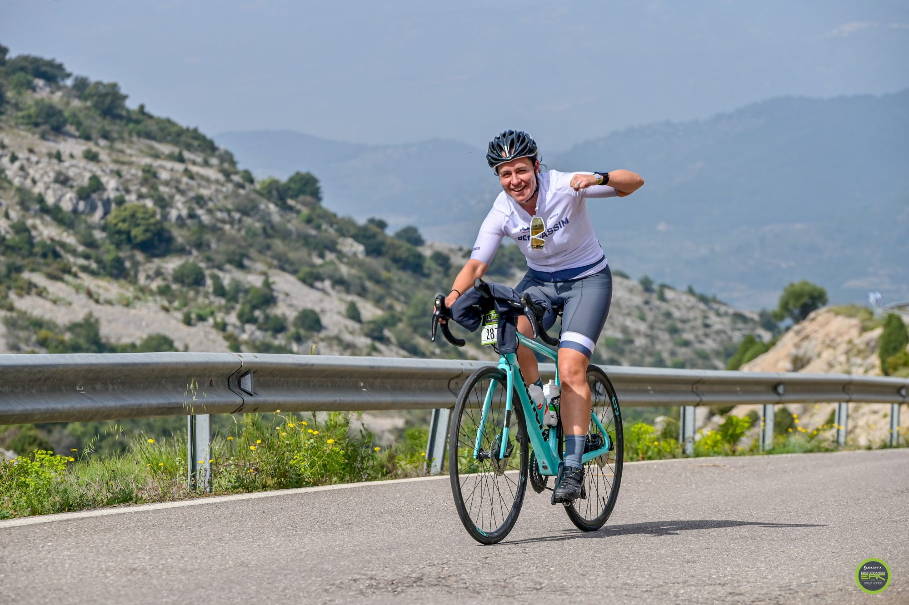
Most women’s camps lean wellness, or lean beginner, or lean Mallorca. The Femmes is none of those.
It’s a real week of riding — three pace options every day, real climbs, a support van that follows every kilometre — held on a coast quiet enough that you’ll wonder why nobody else has been telling you about it. You’ll ride with a guest ambassador from inside the sport, follow a personalised training plan before you arrive, and go home with Field Notes — routes, sessions, what to work on next — so the week keeps working after you’ve flown back.
Each edition brings a guest ambassador from inside women’s cycling into the week. This year’s will be announced nearer the time.
A female-specific training and recovery framework built in — not bolted on — by Paloma (Sports Science, Universitat de València).
Costa del Azahar — quiet roads, genuine climbs, Mediterranean light. The story of where you rode, not just how far.
Pre-arrival plan, bike position check, daily briefings, three evening sessions, recovery workshop, personal feedback, take-home Field Notes.
If you’re weighing this up and want to talk it through before you commit — whether the riding suits you, whether you’d be the only one travelling alone, anything at all — message me. WhatsApp +34 648 565 635 or info@pedalandpause.com. I check both properly, and I’d rather you asked.
We’d rather be straight with you now than have you arrive to the wrong week. The range of riders is wide — from social riders who ride for the love of it to women training with a target in mind — and the multi-level routes are built to hold all of it. What everyone shares is wanting to be on the bike five days out of seven.
Tell us anyway. Once you book, you’ll fill in a short fitness questionnaire — current training hours, longest recent ride, injuries, what you’d like to work on — and we build a personalised pre-arrival training plan from your answers, sized to whatever runway you have. If you’re short of the mark we’ll build the plan to get you closer. If you’re well beyond it, we’ll build it to sharpen you rather than build you.
Every ride day has short, medium and long route options. You pick the level that suits you on the morning — and you can pick differently tomorrow. The support van follows every ride: hydration, snacks, spares, and space for any rider who needs a break or a lift.
Most ride days follow roughly the same shape. Nothing is fixed — the group’s pace and the weather set the exact times — but this is the rhythm:
Monday breaks this pattern — a shorter ride, a skills-and-recovery session, and the afternoon free for the beach, the hotel pool, or napping. Everyone treats it differently.
A gentle reintroduction to the bike after travel days. Rolling coastal roads, a café stop at the halfway, back for a proper lunch. This is the day everyone finds their group and their pace.
The first proper climb of the week — switchbacks through pine forest to a summit with sea views. Not as long as it looks on paper, but a genuine challenge. The shorter option skirts the climb; the medium and long options go over the top.
A shorter morning ride focused on technique — group riding, descending, climbing form. Afternoon is yours: beach, pool, or a book. There’s an optional mobility-for-cyclists session for anyone who wants it.
The week’s big day. 80, 100, or 120 km with 1,200 to 1,800 metres of climbing, through the climbs and coastal roads that define this part of Spain. Nobody rides this day without earning something from it.
A gentler ride to close the week and a long lunch on the road. In the afternoon the masseuse comes to the hotel for recovery massages — then it’s time to change for the sommelier dinner: one of Hotel Bellver’s signature tasting menus, matched with wines from Castellón producers. Usually the dinner people remember longest.
Every edition of The Femmes brings a guest ambassador into the week — a woman from inside cycling, on the road with you in the mornings and at the table in the evenings.
We’ll announce who is joining the 2027 edition nearer the time. What we can say now is that it’s the same idea as the first: someone who knows this sport from the inside and is generous with it. Not a name on a poster — a rider in the group.
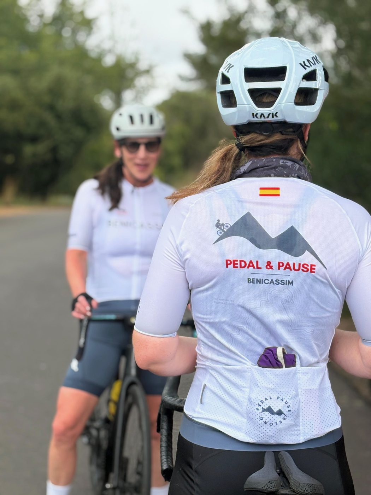
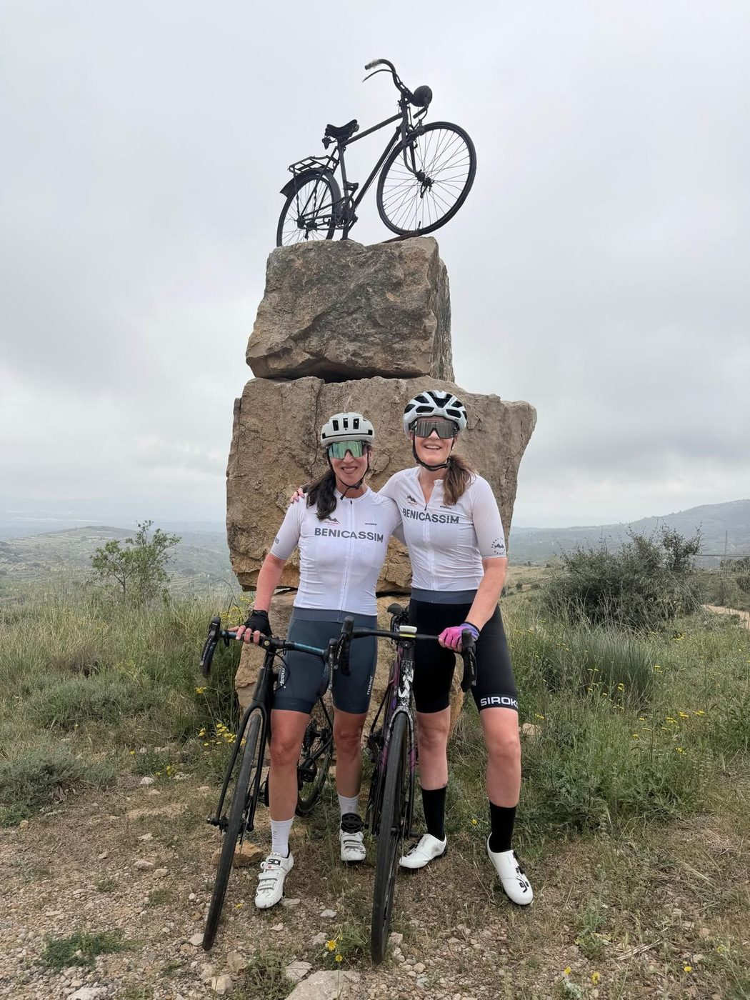
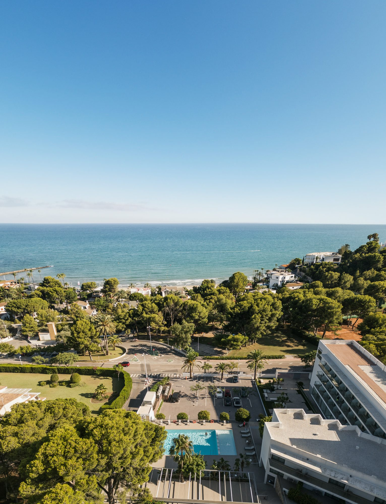
Hotel Bellver is a four-star coastal retreat in Benicàssim, set between Mediterranean pines and the open sea. Modern Spanish design, a pool surrounded by palms, sea-view balconies, and the kind of unhurried atmosphere that makes the difference between a holiday and a recovery.
It’s our home for all six nights — the place where the day ends, the rides reset, and the group becomes friends. Breakfast and dinner are here most days, and the bikes sleep here too.
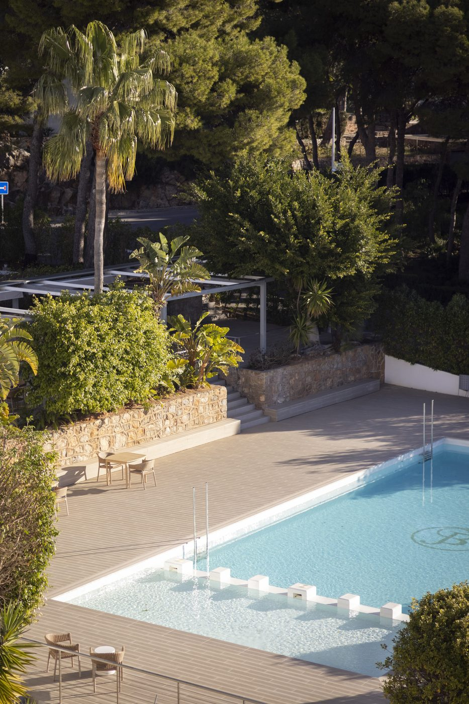
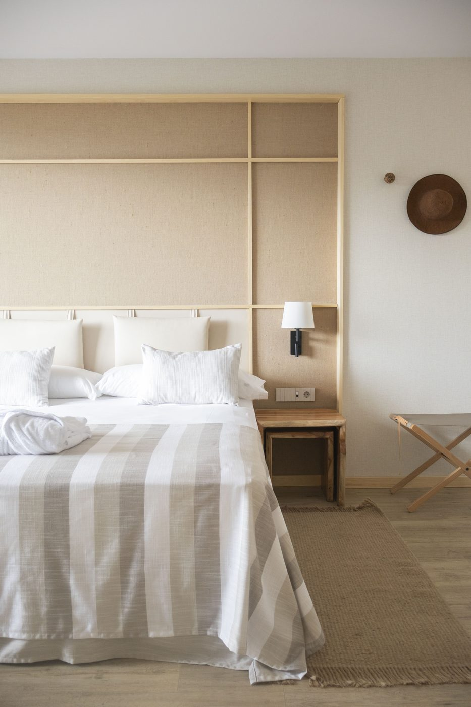
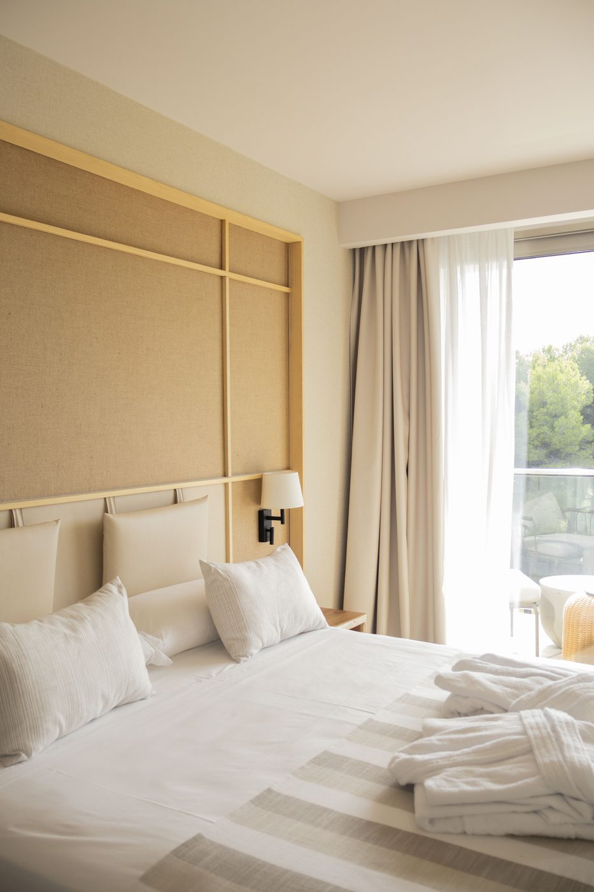
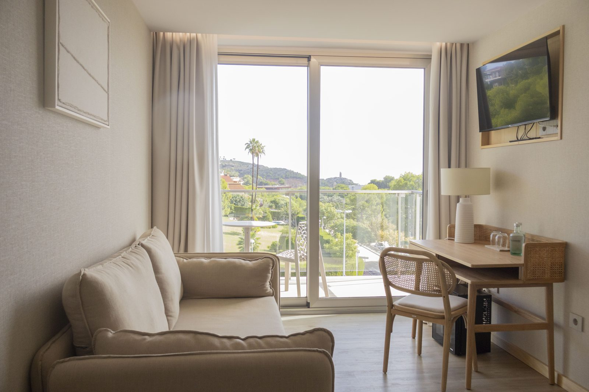
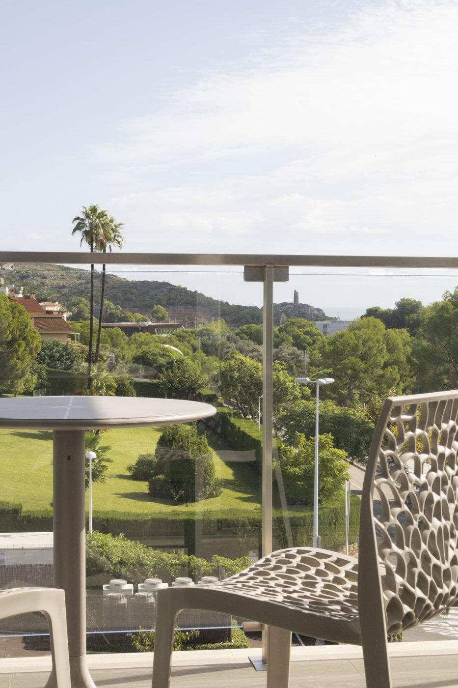
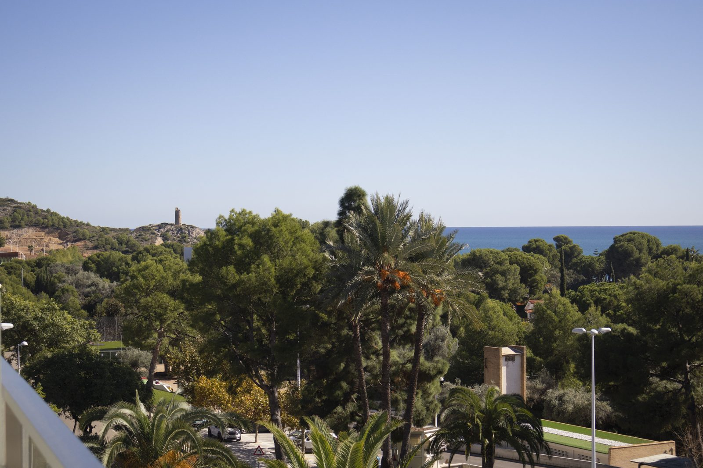
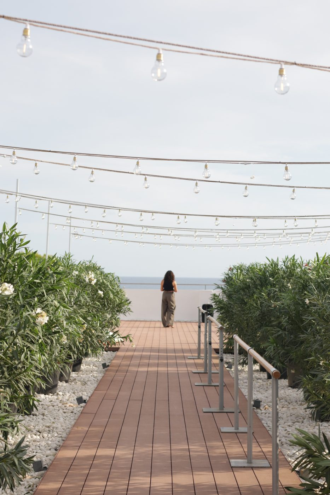
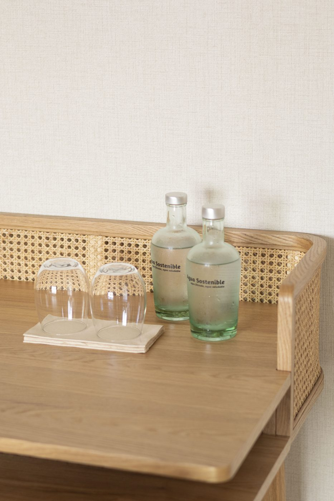
Rooms are shared by two riders, each with her own bed and a shared en-suite. If you’re coming alone we’ll pair you with another solo rider — and we take care over who. If you’d rather have the room to yourself, single occupancy is +€360 for the week; choose it on the registration form or tell us when you book.
That’s part of the point. The Femmes is a deliberately small group of women.
Most guests come alone. A few come with a friend. Everyone leaves with a group. Ages usually range across 30s to 50s, most riders based in the UK and Northern Europe, with some Spanish and international. The language of the camp is primarily English — some conversations will happen in Spanish or French, and that’s part of the fun.
Check in at Hotel Bellver from 15:00 on Friday 22 October; bike position checks run through the afternoon and the welcome dinner is at 19:30. Departure on Thursday 28 October is after breakfast, with most guests heading off between 10:00 and 12:00. Mid-October on the Costa del Azahar usually means 20–24°C in the day and 12–15°C in the mornings, mostly sunny, with a small chance of a shower.
Not the things we put on the brochure — the things that come up when you ask someone how the week was.
Desierto de les Palmes isn’t the biggest climb of the week — that’s the Queen Stage — but it’s the first proper one, and there’s a particular moment on the way up where the switchbacks open out and the Mediterranean appears below you. One of the best five-minute stretches of the week.
The recovery day is when the group settles. People pair off, some go to the beach, some to the pool, some read on the balcony. It’s the day the group starts feeling like a group.
After the Queen Stage, everyone comes back a little quieter than they left, and dinner that evening runs long. The stories from the day come out slowly. Usually the meal riders remember most sharply.
Slower than you think. Everyone lingers over breakfast. The riders you barely knew on Friday are the ones you’re now planning next year’s cycling with. That’s the pattern, week after week.
€100 less than the public-release price, with the same camp inclusions.
Reserve with €150 today. Remaining balance: €849.
Your place is reserved when your deposit is paid. Registering interest does not hold a place.
Ends [date], or when four private-release places are booked—whichever comes first.
Remaining places open to public booking on [date].
€150 deposit. Remaining balance: €949.
Single occupancy costs extra. Airport transfers are excluded. See the full inclusions, room options and the booking terms below. Prices include 21% VAT. The €150 deposit is deducted from your total, not added to it.
Travel insurance covering cycling activity is required — and we’d recommend one that covers trip cancellation too.
Almost certainly, and more so than you think. Every ride day has three distances, so you choose your level each morning rather than signing up to a number now — and the van is there if a day turns out to be more than you wanted. Where we’d like you to be by October is comfortable at 50 km with some climbing, with one 70+ km ride in your legs. If that’s a stretch from where you are today, say so when you register: your pre-arrival training plan is built to close exactly that gap.
No — most riders come alone. The group is small, you’re welcomed at the hotel, given time to settle in, and introduced properly at the welcome dinner. By Sunday nobody is a stranger.
Rooms at Hotel Bellver are double-share as standard — two riders, your own bed each, and a private en-suite between you. If you’re coming alone we pair you with another solo rider, and we take care over it. If you’d rather have the room to yourself, single occupancy is +€360 for the week: choose it on the registration form. Coming with a friend? Say so and you’ll room together.
We’ll announce that nearer the time. Every edition brings a woman from inside the sport into the week — riding with the group, at the table in the evenings. It’s a rider in the group, not a name on a poster, and we’d rather confirm it properly than tease it.
Yes — guests bring their own bike. A road bike with compact gearing (50/34 with an 11–32 or larger cassette) is what we’d recommend for these climbs, serviced before you travel. You won’t need tools or spare tubes: the van carries spares on every ride and the hotel has secure bike storage.
Fly to Valencia (VLC, about 60 minutes away and usually best-connected), Castellón-Costa Azahar (CDT, around 30 minutes) or Reus (REU, about 90 minutes north). Trains down the coast are easy. Transfers aren’t included this year, but we can arrange one from any of the three — tick “request a transfer” on the form and we’ll send you a price.
Then you ride the 80 km option rather than the 120, or you take a lift in the van for a stretch and rejoin. Nobody gets dropped and nobody gets judged. The day exists to be earned in whatever form that takes for you.
We’ll come back to you within 24 hours by email with a Revolut link for the €150 deposit. Once it’s paid your spot is confirmed, and you’ll get the welcome guide, an invitation to the camp WhatsApp group, and a short fitness questionnaire that becomes your personalised training plan. From there we check in at set points — kit, dietary requirements, logistics — so nothing lands on you at the last minute.
Yes to both — just tell us. The €150 deposit holds your spot and comes off the total; the balance (€849 on the private release, €949 on the public release) is due by 23 August 2027, but we can send the link sooner or split it if that’s easier.
Fill this in and we’ll email you within 24 hours with a Revolut link for the €150 deposit. Nothing is charged until you pay it — and your place is only held once you have.
If you’re weighing it up, ask us anything first. There’s no such thing as a silly question, and no such thing as too many messages.
Or email info@pedalandpause.com. For anything urgent, WhatsApp is fastest; for anything longer-form, email is easier. Response time is normally under 24 hours on weekdays — weekends can be slower, we’re often out on the bike.